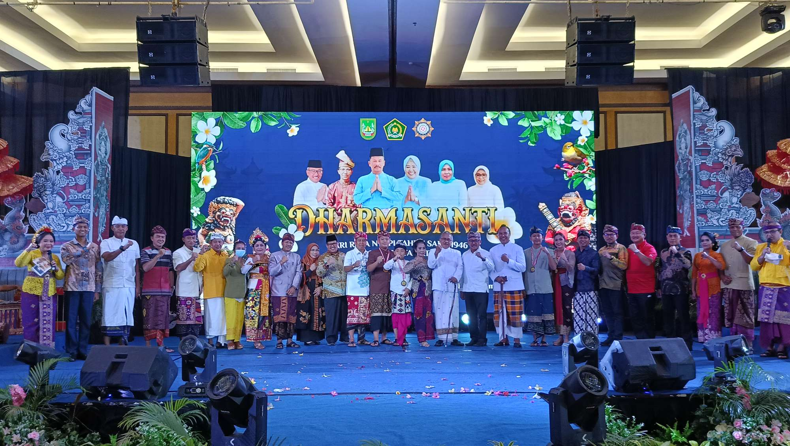

Event

Penutupan Bulan Rosario
Bulan Oktober sebagai bulan Rosario merupakan warisan spiritual dari Paus Leo XIII. Warisan spiritual ini juga dilaksanakan oleh Umat Khatolik di Pulau Bintan yakni pada Minggu, 27 Oktober 2024.

Perayaan Maulid Nabi
Sebagai perayaan penggunaan kembali Masjid Agung Raja Hamidah, dilaksanakan shalat berjamaah yang diikuti oleh umat muslim se-Kota Batam pada 15 September 2024.

Pawai Tatung Tionghoa
Event yang diselenggarakan oleh Majelis Agama Buddha Tridharma Indonesia dengan tema "Harmoni dalam Keberagaman" pada 15 September 2024 di Kota Batam.

Darmasanti Waisak 2568 BE
Acara Ini dilaksanakan pada 08 Juni 2024 bertempat di Maha Vihara Duta Maitreya. Acara ini diawali dengan berbagai kegiatan, mulai bagi takjil, donor darah, dan kegiatan-kegiatan positif lainnya.